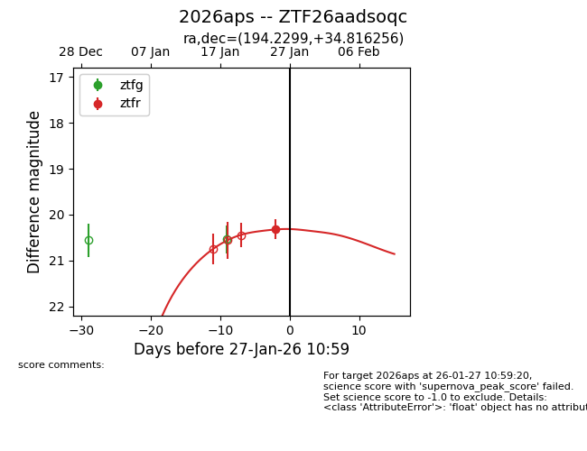
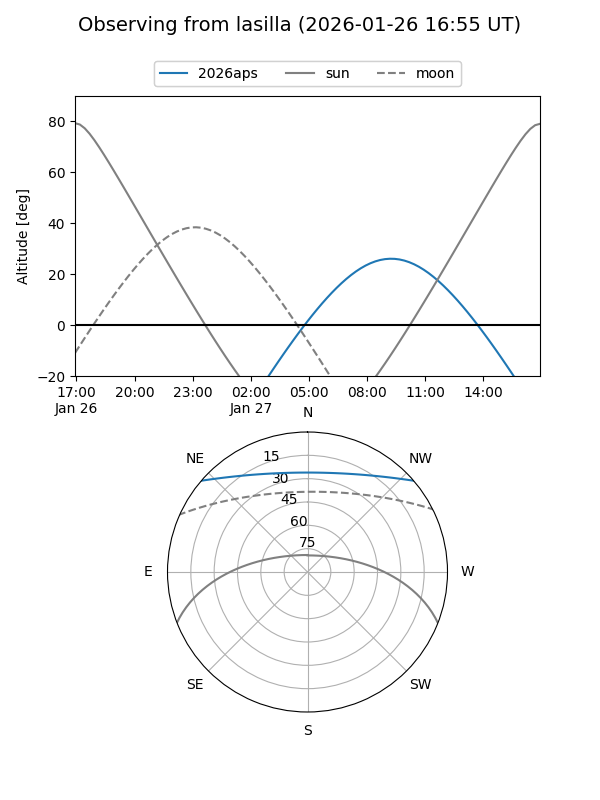
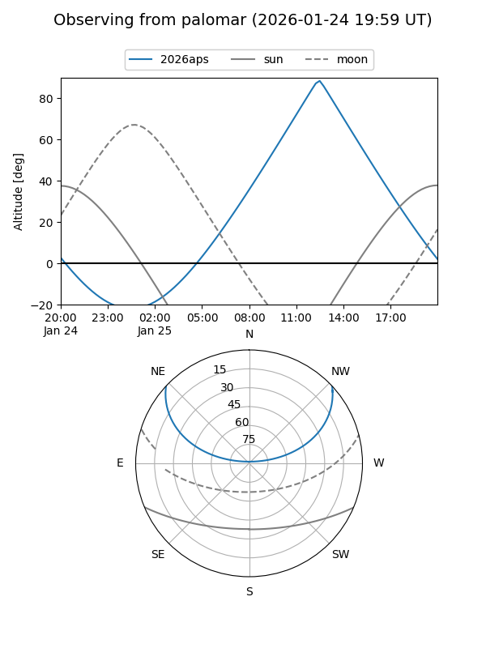
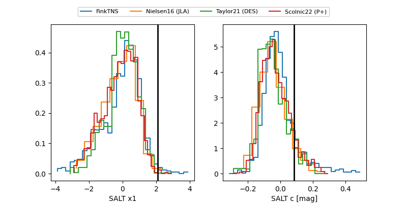

2026aps
Target 2026aps at 2026-01-25 11:01
Aliases and brokers:
FINK: link
Lasair: link
ALeRCE: link
TNS: link
YSE: link
alt names
ZTF26aadsoqc (ztf,fink_ztf)
2026aps (tns,yse)
Coordinates:
equatorial (ra, dec) = 194.2299,+34.81626
equatorial (HMS+DMS) = 12:56:55.18,+34:48:58.52
galactic (l, b) = (114.5888,+82.22300)
Flags:
Photometry:
last ztfr=20.32
1 ztfr detections
Lightcurve

Visibility


Additional plots
